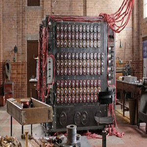

Изобритение
Алана Тьюринга
В течение нескольких недель после прибытия в Блэтчли-парк Тьюринг написал спецификации к электромеханической машине, которая могла помочь со взломом «Энигмы» более эффективно, чем польская «криптологическая бомба». Машина Тьюринга с улучшениями, предложенными математиком Гордоном Велшманом, стала важнейшим инструментом для расшифровки сообщений «Энигмы». Машина получила название Bombe.
Машина искала возможные настройки, использованные для шифрования сообщений порядок роторов, положение ротора, соединения коммутационной панели, опираясь на известный открытый текст. Для каждой возможной настройки ротора у которого было 1019 состояний или 1022 в модификации, использовавшейся на подводных лодках машина производила ряд логических предположений, основываясь на открытом тексте его содержании и структуре. Далее машина определяла противоречие, отбрасывала набор параметров и переходила к следующему. Таким образом, бо́льшая часть возможных наборов отсеивалась и для тщательного анализа оставалось всего несколько вариантов. Первая машина была запущена в эксплуатацию 18 марта 1940 года. Перебор ключей выполнялся за счёт вращения механических барабанов, сопровождавшегося звуком, похожим на тиканье часов.
Машина искала возможные настройки, использованные для шифрования сообщений порядок роторов, положение ротора, соединения коммутационной панели, опираясь на известный открытый текст. Для каждой возможной настройки ротора (у которого было 1019 состояний или 1022 в модификации, использовавшейся на подводных лодках) машина производила ряд логических предположений, основываясь на открытом тексте (его содержании и структуре). Далее машина определяла противоречие, отбрасывала набор параметров и переходила к следующему. Таким образом, бо́льшая часть возможных наборов отсеивалась и для тщательного анализа оставалось всего несколько вариантов. Первая машина была запущена в эксплуатацию 18 марта 1940 года. Перебор ключей выполнялся за счёт вращения механических барабанов, сопровождавшегося звуком, похожим на тиканье часов.
Осенью 1941 года Алана Тьюринга и его коллег Гордона Уэлчмана, Стюарта Милнер-Берри и Конела Хью О’Донела Александера постигло разочарование. На основе наработок польского бюро шифров они смогли наладить работу системы, способной эффективно взламывать шифр «Энигмы», но у них было мало и людей, и машин, поэтому времени на расшифровку всех сообщений не хватало. Тем не менее, благодаря успехам дешифраторов, летом 1941 года потери грузов от действий немецких подлодок сократились до 100 000 тонн в месяц, но этого было всё ещё недостаточно. Группе необходимы были ресурсы для того, чтобы справиться с постоянными улучшениями немцев. Попытки получить больше людей и привлечь финансирование для постройки новых машин официальными путями ни к чему не привели. Наконец, 28 октября, нарушая все правила, они отправили письмо Черчиллю. Тьюринг и его коллеги особенно подчеркнули, что их запросы ничтожны по сравнению с возможной выгодой.
Тьюринг решил заняться особенно сложной задачей анализа «Энигмы» ВМФ, потому что, по его словам, «никто этим не занимался» и он «мог оставить эту проблему себе». В декабре 1939 года Тьюринг разобрался с основной частью индикаторной системы «Энигмы», которая была сложнее, чем использовавшаяся другими родами войск.
В 1941 году Тьюринг сделал предложение коллеге по Коттеджу № 8 — Джоан Кларк, но помолвка продлилась недолго. После признания своей гомосексуальности перед невестой, которая, по слухам, отнеслась к признанию «равнодушно», Тьюринг решил, что не стоит доводить дело до свадьбы.
В 1942-м Алан опять уехал в Штаты, где начал работать над созданием шифра для общения Черчилля и Рузвельта. Спустя год он снова вернулся на прежнее место работы в Блетчли-парк, но на его место уже назначили другого человека. Тьюринг не расстроился, его устроила должность консультанта. Тем более, что теперь его больше всего интересовала машина, которая могла бы полностью заменить человека, именно та, что мы сейчас называем компьютером.
В 1952 году Тьюринг опубликовал работу под названием «Химические основы морфогенеза», где математически описывается процесс самоорганизации материи. Его основным интересом в этой области было листорасположение Фибоначчи — наличие чисел Фибоначчи в структурах растений. Вклад Тьюринга в эту область считается основополагающим.